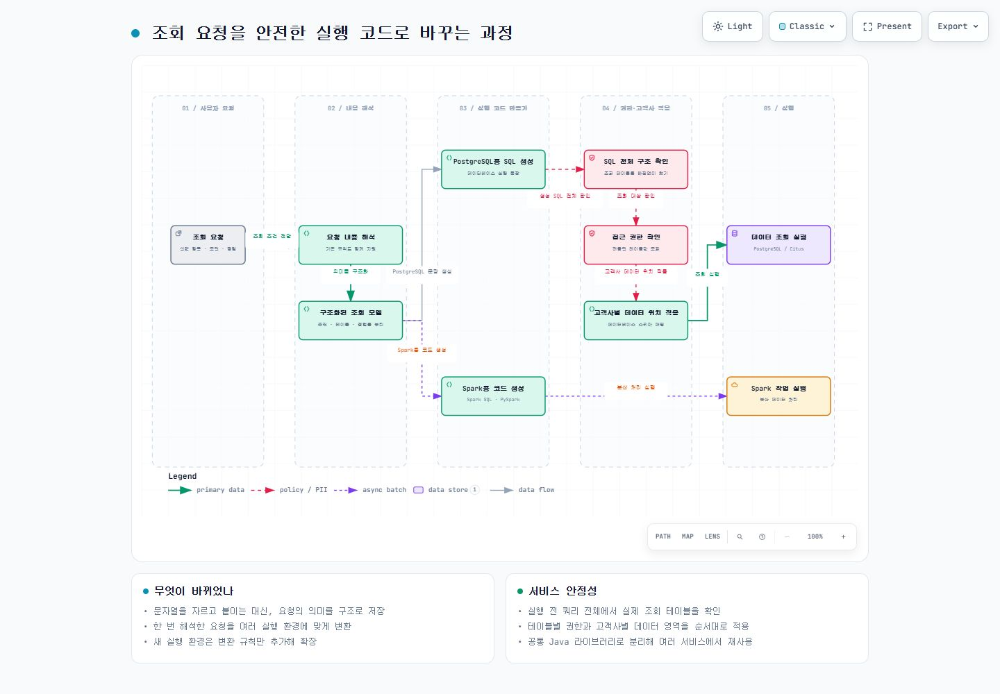

PROJECT 01 / 데이터 플랫폼
여러 SQL 실행 환경을 위한 조회 요청 처리 구조 개선
고객사가 여러 조건으로 데이터를 조회할 때, 요청을 한 번 해석해 PostgreSQL·Spark 환경에서 실행할 코드로 바꾸는 방식을 만들었습니다. 조회 전에 실제 대상 테이블과 권한, 고객사별 데이터 영역도 확인합니다.
- 기간
- 2024.12 ~ 현재
- 담당 역할
- 조회 요청 처리 방식 재설계 · 공통 Java 라이브러리 분리
- Java
- Spring Boot
- PostgreSQL
- Spark SQL
- PySpark
- JSqlParser
조건이 늘수록 쿼리 수정도 늘어남
데이터 제공 서비스는 고객사가 자신의 업무·분석 데이터를 조건에 맞춰 조회하거나 분석 작업을 실행하게 하는 백엔드입니다. 기존 코드는 조회 요청의 항목을 나눠 SQL 문장을 직접 이어 붙였습니다.
단순 조건은 처리할 수 있었지만, 테이블 연결(JOIN), 서브쿼리, 중첩 조건이 들어오면 분기 코드가 빠르게 늘어났습니다. 실행 환경이 바뀔 때마다 같은 조건을 각각의 규칙으로 관리해야 했습니다.
고객사 데이터는 서로 분리되어야 합니다. 최종 쿼리가 어느 테이블을 읽는지 모두 확인한 뒤 권한과 데이터 위치를 적용해야 했지만, SQL 일부만 살피는 방식으로는 이 확인을 일관되게 하기 어려웠습니다.
조회 요청을 하나의 모델로 정리
조회할 테이블, 조건, 정렬, 묶음 기준을 하나의 구조화된 모델로 바꿨습니다. 테이블 연결, 서브쿼리, 중첩 조건도 문자열 조합이 아니라 구성 요소 사이의 관계로 다룹니다.
같은 모델에서 PostgreSQL용 SQL, Spark SQL, PySpark 코드를 각각 만듭니다. 새 실행 환경이 필요해도 요청을 해석하는 코드를 다시 만들지 않고, 해당 환경의 변환 규칙을 추가할 수 있습니다.
SQL 전체를 확인한 뒤 권한과 데이터 영역을 적용
- 생성된 SQL을 다시 읽어 실제로 참조하는 모든 테이블을 찾고, 테이블별 접근 권한을 확인했습니다. 테이블 연결이나 서브쿼리가 있어도 확인 대상이 일부 빠지지 않게 했습니다.
- 고객사마다 데이터베이스 안의 별도 영역인 스키마를 사용합니다. 권한 확인 후 해당 고객사의 스키마를 적용해 다른 고객사의 데이터를 읽지 않도록 했습니다.
- 조회 요청 해석과 코드 생성 기능을 별도 Java 라이브러리로 분리해, 여러 서비스에서 같은 규칙을 유지·배포할 수 있게 했습니다.
검증
- 대표 조회 요청과 기대 결과를 비교하는 자동 테스트로 요청 해석과 코드 생성 결과를 확인했습니다.
- 같은 요청이 PostgreSQL, Spark SQL, PySpark에서 각각 올바른 형식으로 만들어지는지 확인했습니다.
- 지원하지 않는 조건이나 함수는 실행 전에 오류로 안내합니다.
- 기존 방식과 새 방식의 결과를 함께 비교해 기존 조회 규칙이 바뀌지 않았는지 확인했습니다.
결과
복잡한 조건과 테이블 연결, 서브쿼리를 요청의 구성 요소로 나누어 처리하고, 하나의 요청에서 여러 실행 환경의 코드를 생성해 중복 구현을 줄였습니다. SQL 전체 구조를 기준으로 권한과 고객사별 데이터 영역을 적용하며, 공통 라이브러리의 변경 결과는 자동 테스트로 확인합니다.
조회 요청 처리 흐름
조회 요청을 구조화한 뒤 실행 환경별 코드를 생성합니다. PostgreSQL 조회 경로에서는 SQL 전체를 다시 확인해 참조 테이블, 권한, 고객사별 데이터 위치를 적용합니다.
